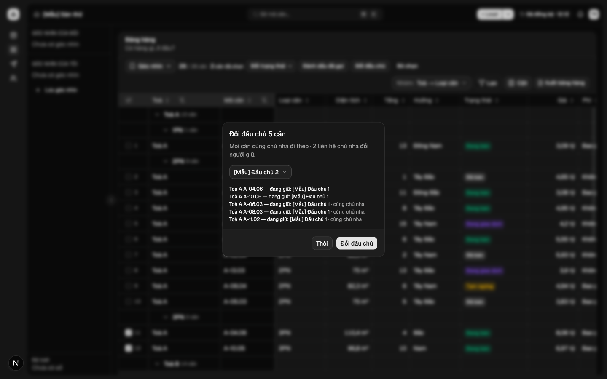
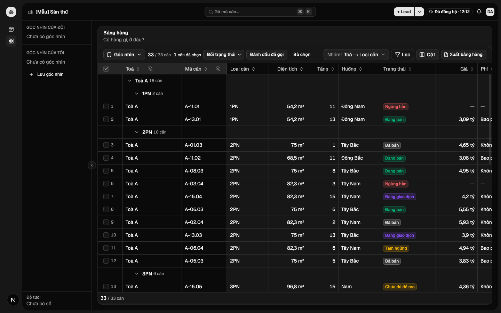

Trưởng nhóm đổi đầu chủ cho nhiều căn một lần, kéo theo mọi căn và liên hệ của cùng chủ nhà, hoàn tác được
Vì sao làm
Trưởng nhóm tích nhiều căn trên Bảng hàng rồi đổi đầu chủ một lần: chọn từ danh sách thành viên mang vai Đầu chủ của sàn, hộp hỏi kể đủ căn và người giữ cũ, đổi đầu chủ của hàng thì đổi luôn người giữ liên hệ chủ nhà theo luật một chủ một đầu chủ, hoàn tác được
Đã hứa
- AC-1 — (cross-layer) Given một người mang tổ hợp vai bất kỳ, When tích căn trên Bảng hàng, Then:
- AC-2 — Given hộp hỏi mở, When chọn người nhận, Then danh sách là đầu chủ của sàn đang làm. Máy chủ từ chối (400) người
- AC-3 — Given k căn đã tích, When hộp hỏi dựng bản xem trước, Then hộp hỏi kể:
- AC-4 — (cross-layer) Given bản xem trước, When trưởng nhóm bấm «Đổi đầu chủ», Then:
- AC-5 — (cross-layer) Given một lần đổi vừa xong, When bấm «Hoàn tác», Then:
- AC-6 — Given hai sàn A và B, When người sàn A gọi xem trước, đổi hay hoàn tác với mã căn hay mã lần đổi của sàn B, Then
- AC-7 — Given tập căn sau khi kéo theo vượt 200, When xem trước hay đổi, Then máy chủ từ chối (400) kèm lời «Tối đa 200
- AC-8 — Given lần đổi đã ghi, When đọc tài liệu trong cùng PR, Then ADR-0021 có mục sửa đổi 05/11: lối hàng loạt đổi
- AC-9 — Given trưởng nhóm mẫu trên máy tính 1440, When tích 5 căn của 2 chủ nhà mẫu rồi đổi sang một đầu chủ khác, Then
Thiết kế
_acceptance/doi-dau-chu-hang-loat/design.md
Quyết định
- 2026-11-04 · Máy · approach · S1 — Đã tra tri thức: Trưởng nhóm tích nhiều căn trên Bảng hàng rồi đổi đầu chủ một lần: chọn từ danh sách thành viên mang vai Đầu chủ của sàn, hộp hỏi kể đủ căn và người giữ cũ, đổi đầu chủ của hàng thì đổi luôn người giữ liên hệ chủ nhà theo luật một chủ một đầu chủ, hoàn tác đượcKho đã khai tri_thuc — bước thiết kế tra trang trước khi chọn.
- 2026-11-04 · Máy · approach · S1 — Tập căn đổi là các căn đã tích CỘNG mọi căn khác của cùng chủ nhà (cùng liên hệ chủ nhà); liên hệ chủ nhà của các căn ấy đổi người giữ sang đầu chủ mới trong cùng một giao dịch.Câu giao và ngưỡng của ô cơ hội: đổi đầu chủ thì đổi luôn người giữ liên hệ theo luật một chủ một đầu chủ, «mọi hàng của 2 chủ ấy và 2 liên hệ cùng sang».
- 2026-11-04 · Máy · approach · S1 — Đổi người giữ liên hệ khi đổi đầu chủ hàng loạt là một sửa đổi của ADR-0021 điểm 5 («giao lại hàng không tự đổi người giữ»): thêm mục sửa đổi 05/11 cho lối hàng loạt; lối gán một căn (PUT listing-agent) giữ nguyên.Câu giao do chủ kho chọn ở Cổng Đáng đòi đổi luôn người giữ; ADR-0021 Hỏi-3 nói ngược lại cho lối giao lại cũ.
- 2026-11-04 · Máy · approach · S1 — Đổi và hoàn tác chạy ở máy chủ bằng hàm security definer (migration 027) ghi một «lần đổi đầu chủ» kèm từng căn và liên hệ với người giữ cũ; hoàn tác đọc lần ấy, không đi kho trên máy như sửa hàng loạt hàng 16.Bảng gán đầu chủ chỉ thêm dòng và vai API không được sửa liên hệ (006, 016); khuôn reassign_prospect của 021 đổi người giữ ở máy chủ; người giữ cũ của từng căn phải nhớ ở máy chủ để hoàn tác trả đủ.
- 2026-11-04 · Máy · approach · S1 — Hoàn tác theo khuôn hàng 16: nút «Hoàn tác» trên thông báo 10 giây; máy chủ trả người giữ cũ cho căn và liên hệ còn đang do người nhận giữ, bỏ qua và đếm căn hay liên hệ đã đổi tiếp sau đó; một lần đổi chỉ hoàn tác một lần.Sửa hàng loạt hàng 16 đã chốt nút Hoàn tác trên thông báo 10 giây và bỏ qua căn có lần sửa sau (bulk/thanh.tsx, hoan-tac-lo.ts).
- 2026-11-04 · Máy · approach · S1 — Danh sách người nhận lấy từ GET /api/v1/team/listing-agents (chỉ trưởng nhóm, đầu chủ của sàn); máy chủ từ chối người nhận không mang vai Đầu chủ.Đường đã có cho trưởng nhóm, trả userId và tên; /company/members chỉ cho quản trị.
- 2026-11-04 · Máy · approach · S1 — Hộp hỏi kể từng căn sẽ đổi (mã căn, đầu chủ cũ, đánh dấu căn kéo theo vì cùng chủ) và số liên hệ chủ nhà đổi người giữ; không hiện tên hay số chủ nhà.Câu giao: «hộp hỏi kể đủ căn và người giữ cũ»; tên và số chủ nhà là lớp source, hộp hỏi không cần.
- 2026-11-04 · Máy · approach · S1 — Lệnh «Đổi đầu chủ» chỉ hiện cho người mang vai Trưởng nhóm (lõi điều hướng quyết), máy chủ chặn độc lập; trần một lần 200 căn sau khi kéo theo, quá thì từ chối kèm lời.Ngưỡng ô cơ hội: «đầu chủ không phải trưởng nhóm không thấy lệnh»; bảng gán chỉ cho trưởng nhóm gán lại (006).
- 2026-11-04 · Máy · descope · S1 — bỏ design-pass — thêm một lệnh vào thanh sửa hàng loạt có sẵn (hàng 16) và một hộp hỏi AlertDialog theo khuôn bang-hang; ảnh màn thật chụp ở lượt chấmKhông nhóm màn mới, không đổi khối đích; thanh và hộp hỏi đã có khuôn.
- 2026-11-04 · Máy · approach · S1 — Đổi người giữ liên hệ khi đổi đầu chủ hàng loạt là mục sửa đổi 05/11 của ADR-0021 điểm 5; lối gán một căn tách thành Hỏi-1.Câu giao do chủ kho chọn ở Cổng Đáng đòi đổi luôn người giữ ở lối hàng loạt; phần lối một căn không có căn cứ quyết (gap-probe P0).
- 2026-11-04 · Máy · approach · S1 — Hỏi-1 · Lối gán đầu chủ từng căn đang có: khuyến nghị giữ nguyên ở hàng này (không kéo người giữ liên hệ, không kéo căn cùng chủ), lệch một chủ hai đầu chủ vẫn hiện ở danh sách liên hệ nhiều đầu chủ của trưởng nhóm; đồng bộ lối một căn làm ở hàng sau.Phản biện (P0): câu giao chỉ nói lối hàng loạt; để hai lối cư xử khác nhau là đánh đổi nghĩa sản phẩm.
- 2026-11-04 · Máy · approach · S1 — Hỏi-2 · Hoàn tác với căn trước đó chưa có đầu chủ (bảng gán chỉ thêm dòng, không trả về «không ai» được): khuyến nghị căn ấy giữ người nhận, liên hệ của cùng chủ nhà cũng giữ người nhận cho nhất quán, thông báo hoàn tác ghi riêng «N căn trước chưa có đầu chủ nên giữ [người nhận]».Phản biện (P0): trả về «không ai» cần đổi bảng gán (cột người không null) và ngưỡng «hoàn tác trả đủ người giữ cũ» không trọn cho ca này.
- 2026-11-04 · Người · seal · gate1 —
- 2026-11-04 · Máy · approach · S2 — Cột đầu chủ đổi trên bảng nhờ web gọi bộ đồng bộ kéo lại ngay sau khi đổi và sau khi hoàn tác; không ghi sự kiện mới vào lịch sử hàng (design §2 bước 4 thay bằng câu này).Lần kéo của bộ đồng bộ là bản chụp trọn GET /api/v1/listings, listAgentKey tính lúc đọc từ dòng gán mới nhất (apps/web/src/lib/sync/keo.ts:27-35, packages/api/src/listings/lan-doi.ts:58-67); gán một căn (owners/store.ts assignAgent) cũng không ghi sự kiện.
- 2026-11-05 · Máy · fix · S3 — Bảng hàng chưa có cột «Đầu chủ» (cot.ts); «cột đầu chủ đổi theo nhờ bộ đồng bộ» của AC-4 được chứng ở kho trên máy của bảng (E4c: listAgentKey = D2 sau một lần kéo, không dựng lại kho) và trên màn thật bằng cách mở lại hộp hỏi không tải trang (E9). Không thêm cột mới ở hàng này.Đầu chủ trên máy chỉ đọc ở hồ sơ căn và Hôm nay (listAgentKey); thêm cột vào bảng là đổi nghĩa màn Bảng hàng ngoài phạm vi đã duyệt và ngoài vùng inventory/bulk.
- 2026-11-05 · Máy · fix · S3 — Trên màn thật E9 ghi lần đổi không tải lại trang (một lần điều hướng duy nhất), thông báo 10 giây và trạng thái Postgres sau đổi, sau hoàn tác; không mở lại hộp hỏi giữa chừng vì thông báo có «Hoàn tác» chỉ sống 10 giây. Đường đồng bộ đưa đầu chủ mới về kho trên máy chứng ở E4c.Mở lại hộp hỏi sau khi đổi làm lỡ nút Hoàn tác của thông báo; hộp hỏi đọc bản xem trước của máy chủ chứ không đọc kho trên máy, nên không thêm bằng chứng cho đường đồng bộ.
- 2026-11-05 · Máy · fix · S3 — Xem trước và đổi kiểm mọi căn của lần đổi (kể cả căn kéo theo vì cùng chủ nhà) theo trục ai thấy hàng (canRead của lõi): có căn «Chỉ tôi» của người khác thì trả 404 như mã lạ, không dòng nào đổi; ba đường mới vào bảng đường chạm hàng của bài kiểm ai thấy hàng kèm một ca.Bài kiểm «mọi đường chạm hàng nằm trong bảng bốn đường» (packages/api/test-db/visibility.test.ts) đỏ khi thêm ba đường; trưởng nhóm không được mở hàng Chỉ tôi (hàng 12), mà hàm SQL không biết nấc ai thấy (nấc gấp từ sự kiện ở lõi).
- 2026-11-05 · Máy · fix · S3 — Chỗ thử giao diện chạy máy dev bằng webpack (next dev --webpack), không Turbopack.Soi 05/11: kho chính có package-lock.json ở thư mục cha nên Turbopack theo dõi cả kho chính; worktree các dãy khác và thư mục đợt đổi liên tục → 4.283 lần «Compiled», trang /inventory tải lại không dứt, kẹt «Đang tải lần đầu» (cùng gốc với hàng 43). Với webpack: 0 lần tải lại, bảng lên.
- 2026-11-05 · Máy · fix · S3 — Ô chọn người nhận truyền danh sách mục (items) cho Select để hiện tên đầu chủ thay cho mã người; thêm một bài kiểm ghim điều này.Chạy thử E9 05/11: ô chọn hiện uuid của người nhận (Base UI Select chỉ hiện nhãn khi có items).
- 2026-11-05 · Máy · fix · S4-r1 — Sửa bốn chỗ đo trong hợp đồng: E3 ghi tên và số chủ nhà thật qua API rồi mới quét; E1b dựng nút thật theo 6 tổ hợp vai (renderToStaticMarkup) kèm luật giả làm chiều đỏ; E4b kiểm thứ tự gọi máy chủ → thông báo → kéo đồng bộ bằng hàm điều phối chayDoi/chayHoanTac; E6 dùng lần đổi thật D1→D2 kèm đối chứng dương.Lượt chấm 1 (REJECT) nêu bốn bài đo chuỗi có mặt hay khẳng định âm tính đúng hiển nhiên (review-findings, AC-1, AC-3, AC-4, AC-6).
- 2026-11-05 · Máy · descope · S4-r1 — Chủ kho chọn «Thu AC-4, cột sau»: AC-4 hứa đầu chủ mới về dữ liệu trên máy sau một lần đồng bộ; cột «Đầu chủ» trên Bảng hàng là hàng sau.Lượt chấm 1 trả lại vì AC-4 hứa cột đầu chủ trên bảng mà Bảng hàng không có cột; E4c đã chứng đầu chủ mới về kho trên máy; ngưỡng Cổng Đáng không đòi cột.
- 2026-11-05 · Người · seal · gate1 —
- 2026-11-05 · Máy · fix · S4-r2 — Bỏ lượt chấm wf_95407d73-d54 (không ghi sổ chạy): script được tiêm nhầm bộ tham số cũ của lượt 1 nên chấm theo bài đo E9 trước khi thu AC-4; sửa chữ thông báo hoàn tác thành «Đã trả lại người giữ cũ: N mục (căn và liên hệ)» rồi chấm lại lượt 2.Lời giao của tác tử chấm E9 còn chữ «bảng hiện D2» và «cột đầu chủ… 30 giây» mà evals.yaml đã bỏ ở 8c9b89ed; cùng lượt ấy tác tử thấy thông báo hoàn tác ghi «7 căn và liên hệ» khi chỉ có 5 căn và 2 liên hệ.
- 2026-11-05 · Máy · fix · S4-r2 — Sửa bốn bài đo lượt 2 chỉ ra: E9 ghi chủ nhà thật qua API rồi quét đúng tên, số đó trong hộp hỏi kèm đối chứng dương; ca cách ly gọi đủ ba hàm (thêm hoàn tác) với bốn vai (thêm đầu khách) kèm đối chứng trưởng nhóm; thông báo Hoàn tác và ô chọn người nhận được dựng thật thay vì dò chữ trong mã; nút khi có mạng có đối chứng bật.Lượt chấm 2 (REJECT, mọi eval đạt) nêu bốn bài đo yếu ở review-findings: quét sai giá trị (AC-3), thiếu hàm hoàn tác (AC-1), đo mã nguồn (AC-4), âm tính một mình (AC-7).
- 2026-11-05 · Máy · fix · S4-r3 — Sửa hai chỗ lượt 3 chỉ ra: lỗi kiểu ở tệp test ô chọn người nhận; ô «không tải lại trang» của E9 nay đo dấu đặt trên window ngay trước khi bấm, kèm đối chứng tải lại thật thì dấu mất.Lượt chấm 3 (REJECT): npm run typecheck đỏ ở doi-dau-chu.test.ts; ô khongTaiLai đếm mục navigation nên không bao giờ ra sai (review-findings, AC-4).
- 2026-11-05 · Máy · revisit · S4-r3 — Chủ kho cho mở lượt chấm 4 sau khi hết ba lượt: «Mở lượt 4».Lượt 3 trả lại chỉ vì lỗi kiểu ở tệp test và ô đo không tải lại thiếu đối chứng; cả hai đã sửa ở d5242202.
Bằng chứng
Các eval
| Eval | Tiêu chí | Loại | Verdict | run_id | verified_at |
|---|---|---|---|---|---|
| E1 | AC-1 | test | PASS | minted-doi-dau-chu-hang-loat-E1-r4 | 2026-11-05T05:09:36Z |
| E1b | AC-1 | test | PASS | minted-doi-dau-chu-hang-loat-E1b-r4 | 2026-11-05T05:09:36Z |
| E1c | AC-1 | test | PASS | minted-doi-dau-chu-hang-loat-E1c-r4 | 2026-11-05T05:09:36Z |
| E2 | AC-2 | test | PASS | minted-doi-dau-chu-hang-loat-E2-r4 | 2026-11-05T05:09:36Z |
| E3 | AC-3 | test | PASS | minted-doi-dau-chu-hang-loat-E3-r4 | 2026-11-05T05:09:36Z |
| E4 | AC-4 | test | PASS | minted-doi-dau-chu-hang-loat-E4-r4 | 2026-11-05T05:09:36Z |
| E4b | AC-4 | test | PASS | minted-doi-dau-chu-hang-loat-E4b-r4 | 2026-11-05T05:09:36Z |
| E4c | AC-4 | test | PASS | minted-doi-dau-chu-hang-loat-E4c-r4 | 2026-11-05T05:09:36Z |
| E5 | AC-5 | test | PASS | minted-doi-dau-chu-hang-loat-E5-r4 | 2026-11-05T05:09:36Z |
| E6 | AC-6 | test | PASS | minted-doi-dau-chu-hang-loat-E6-r4 | 2026-11-05T05:09:36Z |
| E7 | AC-7 | test | PASS | minted-doi-dau-chu-hang-loat-E7-r4 | 2026-11-05T05:09:36Z |
| E8 | AC-8 | script | PASS | minted-doi-dau-chu-hang-loat-E8-r4 | 2026-11-05T05:09:36Z |
| E8b | AC-1 | script | PASS | minted-doi-dau-chu-hang-loat-E8b-r4 | 2026-11-05T05:09:36Z |
| E9 | AC-9 | ui-check | PASS | minted-doi-dau-chu-hang-loat-E9-r4 | 2026-11-05T05:09:36Z |
| E9b | AC-4 | ui-check | PASS | minted-doi-dau-chu-hang-loat-E9b-r4 | 2026-11-05T05:09:36Z |
Chi tiết từng eval
PASS E1 · test
AC-1: (cross-layer) Given một người mang tổ hợp vai bất kỳ, When tích căn trên Bảng hàng, Then:
npm test -w @quy-hang/core ℹ duration_ms 699.2205
PASS E1b · test
AC-1: (cross-layer) Given một người mang tổ hợp vai bất kỳ, When tích căn trên Bảng hàng, Then:
npm test -w @quy-hang/web ℹ duration_ms 2763.629083
PASS E1c · test
AC-1: (cross-layer) Given một người mang tổ hợp vai bất kỳ, When tích căn trên Bảng hàng, Then:
npm run db:migrate && npm run db:test ℹ duration_ms 70727.824875
PASS E2 · test
AC-2: Given hộp hỏi mở, When chọn người nhận, Then danh sách là đầu chủ của sàn đang làm. Máy chủ từ chối (400) người
npm run db:migrate && npm run db:test ℹ duration_ms 70727.824875
PASS E3 · test
AC-3: Given k căn đã tích, When hộp hỏi dựng bản xem trước, Then hộp hỏi kể:
npm run db:migrate && npm run db:test ℹ duration_ms 70727.824875
PASS E4 · test
AC-4: (cross-layer) Given bản xem trước, When trưởng nhóm bấm «Đổi đầu chủ», Then:
npm run db:migrate && npm run db:test ℹ duration_ms 70727.824875
PASS E4b · test
AC-4: (cross-layer) Given bản xem trước, When trưởng nhóm bấm «Đổi đầu chủ», Then:
npm test -w @quy-hang/web ℹ duration_ms 2763.629083
PASS E4c · test
AC-4: (cross-layer) Given bản xem trước, When trưởng nhóm bấm «Đổi đầu chủ», Then:
npm run test:db -w @quy-hang/web ℹ duration_ms 9082.982583
PASS E5 · test
AC-5: (cross-layer) Given một lần đổi vừa xong, When bấm «Hoàn tác», Then:
npm run db:migrate && npm run db:test ℹ duration_ms 70727.824875
PASS E6 · test
AC-6: Given hai sàn A và B, When người sàn A gọi xem trước, đổi hay hoàn tác với mã căn hay mã lần đổi của sàn B, Then
npm run db:migrate && npm run db:test ℹ duration_ms 70727.824875
PASS E7 · test
AC-7: Given tập căn sau khi kéo theo vượt 200, When xem trước hay đổi, Then máy chủ từ chối (400) kèm lời «Tối đa 200
npm run db:migrate && npm run db:test ℹ duration_ms 70727.824875
PASS E8 · script
AC-8: Given lần đổi đã ghi, When đọc tài liệu trong cùng PR, Then ADR-0021 có mục sửa đổi 05/11: lối hàng loạt đổi
node --test "_acceptance/doi-dau-chu-hang-loat/thu/*.test.mjs" ℹ duration_ms 139.304083
PASS E8b · script
AC-1: (cross-layer) Given một người mang tổ hợp vai bất kỳ, When tích căn trên Bảng hàng, Then:
design-floor-khuon.mjs --kiem --root . 4 tệp giao diện ngoài bản đồ
PASS E9 · ui-check
AC-9: Given trưởng nhóm mẫu trên máy tính 1440, When tích 5 căn của 2 chủ nhà mẫu rồi đổi sang một đầu chủ khác, Then




PASS E9b · ui-check
AC-4: (cross-layer) Given bản xem trước, When trưởng nhóm bấm «Đổi đầu chủ», Then:
Eval không phân biệt (Analyst)
Vòng verify
- Round 1: lượt chấm đầu, đã trả về triển khai.
- Round 2: lượt chấm 2, đã trả về triển khai (bài đo quét chủ nhà thật có đối chứng, đủ ba hàm × bốn vai).
- Round 3: REJECT — lỗi kiểm kiểu ở test và ô không tải lại. Returned to implementation.
- Round 4: tất cả eval PASS, không còn eval đỏ; verdict PASS.
Tài nguyên
| Khối | Tác tử | Token đầu ra |
|---|---|---|
| S4 round 1 | 26 | 60.025 |
1 lượt chấm · tổng 60.025 token
Giới hạn và ngoài hợp đồng
- Báo cho đầu chủ cũ hay mới khi bị đổi hàng: hàng sau.
- Đổi đầu chủ trên điện thoại: Bảng hàng kiểu Sheet chỉ có trên máy tính.
- Lối gán một căn (`PUT /listings/{id}/listing-agent`) đổi luôn người giữ liên hệ: giữ nguyên hành vi cũ (Hỏi-1, viết theo khuyến nghị).
- Lead đang mở của chủ nhà đổi theo: lead đi theo luật chia lead, không đổi ở hàng này.
- Hoàn tác sau khi thông báo 10 giây đã tắt.
- Cột «Đầu chủ» trên Bảng hàng: hàng sau (chủ kho chọn 05/11 sau lượt chấm 1). Bảng hàng chưa có cột này; thêm cột cần danh sách tên đầu chủ cho mọi vai và xếp lớp trong luật ẩn trước khi «Xuất bảng hàng» mang nó ra ngoài.
Giao
chưa ghi quan sát production
Giá trị
- Câu hỏi phép đo trả lời: [đề xuất] đã đạt «Trưởng nhóm đổi đầu chủ cho 5 căn của 2 chủ nhà: mọi hàng của 2 chủ ấy và 2 liên hệ cùng sang đầu chủ mới; đầu chủ không phải trưởng nhóm không thấy lệnh; hoàn tác trả đủ người giữ cũ; bộ kiểm cách ly xanh» chưa? — chưa đo
- Kết quả nào là SỐNG: [đề xuất] Trưởng nhóm đổi đầu chủ cho 5 căn của 2 chủ nhà: mọi hàng của 2 chủ ấy và 2 liên hệ cùng sang đầu chủ mới; đầu chủ không phải trưởng nhóm không thấy lệnh; hoàn tác trả đủ người giữ cũ; bộ kiểm cách ly xanh — chưa đo
- Kết quả nào là CHẾT: [đề xuất] chưa đạt «Trưởng nhóm đổi đầu chủ cho 5 căn của 2 chủ nhà: mọi hàng của 2 chủ ấy và 2 liên hệ cùng sang đầu chủ mới; đầu chủ không phải trưởng nhóm không thấy lệnh; hoàn tác trả đủ người giữ cũ; bộ kiểm cách ly xanh» khi hết timebox — chưa đo
- Timebox: … — chưa đo